Денис Хананеин, Яндекс.
Денис Хананеин, разработчик интерфейсов, Яндекс
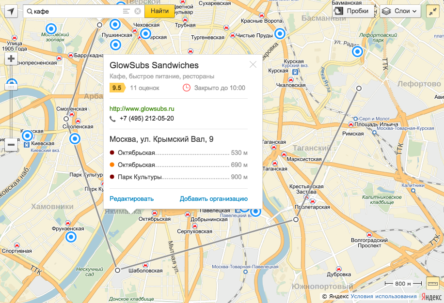
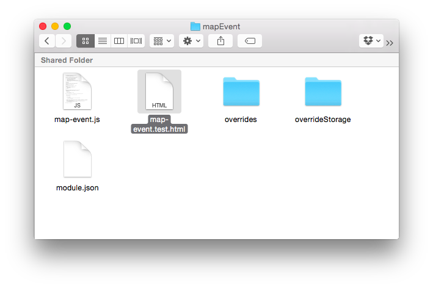
<script src="../../test/yui3combo/combo.js"><link href="../../test/yui3combo/combo.css"/>// helper<script src="../../test/run-test-case.js">
Копировать — вставить
testMapEvent: () => {// какие-нибудь действияY.assert(res == '256,256/0,0/328,228' && aliasRes == res,'Координаты вычислены неправильно, получено: ' + res);}
testMapEventY.assert(a & b & c & d, 'error')this.wait … this.resume
ymaps.geocode('174.184804,77.380152').then(res => {
this.resume(() => {
Y.assert(len == 34,'неверное количество геообъектов');
});
}, this);
this.wait(// Y.error);
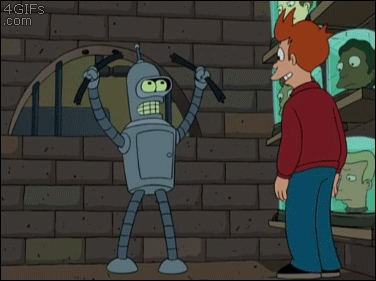
| Плюсы | Минусы |
|---|---|
| быстро | дорого |
| вся команда понимает, как писать тесты |
у всех есть задачи |
| все любят писать тесты… |
| Плюсы | Минусы |
|---|---|
| команда работает | человека жалко |
| есть ответственный | долго |
| если стажер или практикант — хорошее знакомство с проектом |
команде сложно начать писать тесты |
| Плюсы | Минусы |
|---|---|
| переписывание выполняется в фоне | долго |
| есть время разобраться и понять, как что работает |
очень-очень долго |
| быстро привыкается к хорошему | в проекте две версии тестов |
Если рефакторинг ломает много старых тестов,
допускается просто поправить их.
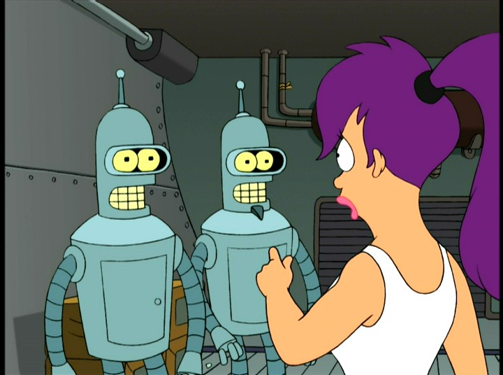
ymaps.modules.define('test.Map', ['Map','util.bounds'], function (provide, Map, utilBounds) {// Тесты});
describe('Map', function () {it('Должен изменить центр карты', done => {myMap.setCenter([55, 37]).done(newCenter => {expect(newCenter).to.be('55,37');done();});
Тесты простые, для асинхронных интерфейсов нужно просто вызвать done
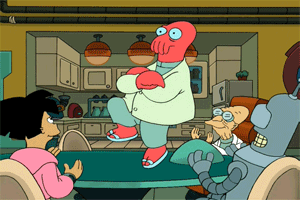
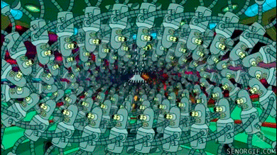
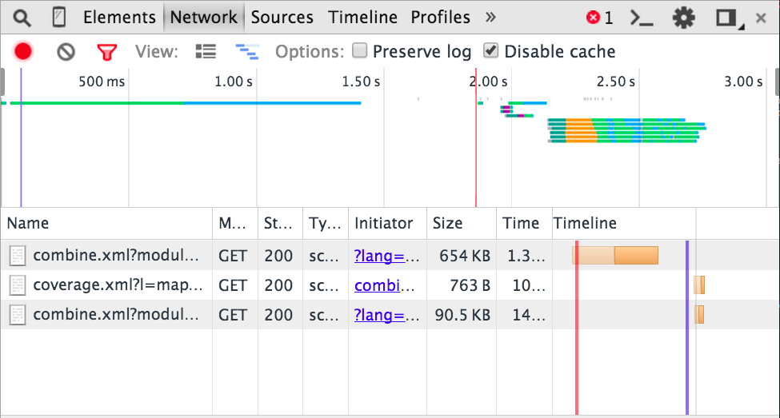
Часто в проекте есть зависимость от какой-либо библиотеки. Ещё она сама может загрузить за что-нибудь. В Mocha окружение у тестов всегда одно — скрипты один раз подгрузились и всё.
Несколбко тест-кейсов создают в BODY инпут и что-то с ним делает. Может оказаться, что инпут уже есть, ID не уникальный и т.д.
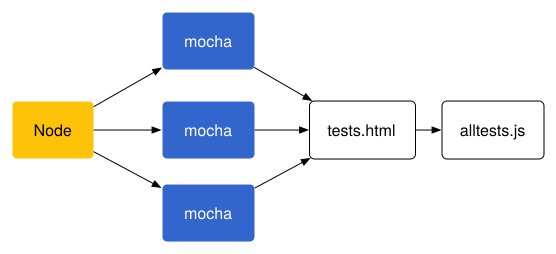
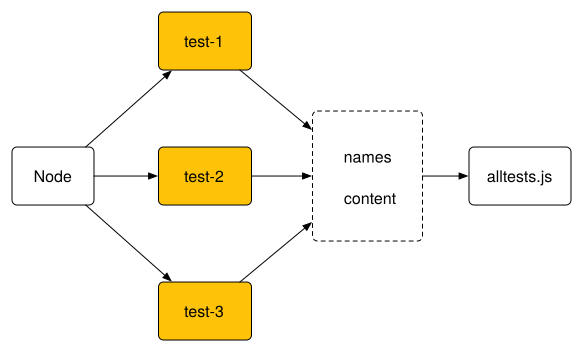
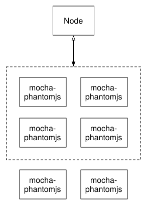
server.ru/tests.html?module=test.control.Button
// Получим список модулей.let module = util.get('module', 'all');// Подгрузим и запустим необходимые.ymaps.modules.require(module, () => {// Run mocha});
ymaps.modules.define('test.Map', ['Map','util.bounds'], (provide, Map, utilBounds) => {// Тесты});
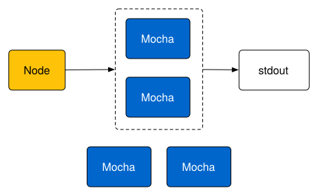
passing: 107∆ 'test.LoadingObjectManager'∆ 'test.ObjectManager'∆ 'test.RemoteObjectManager'…∆ 'test.objectManager.overlays'failing: 0
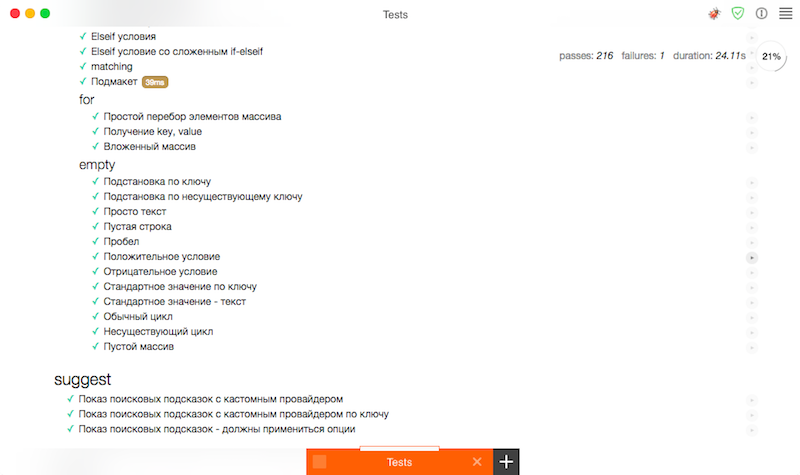
Денис Хананеин, разработчик интерфейсов
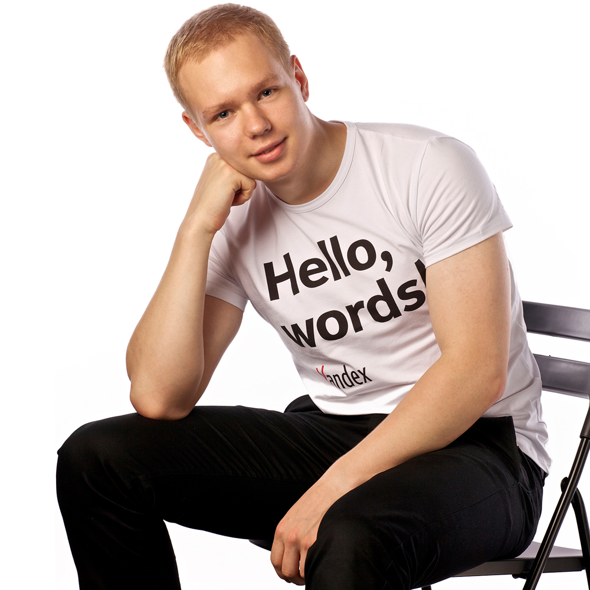